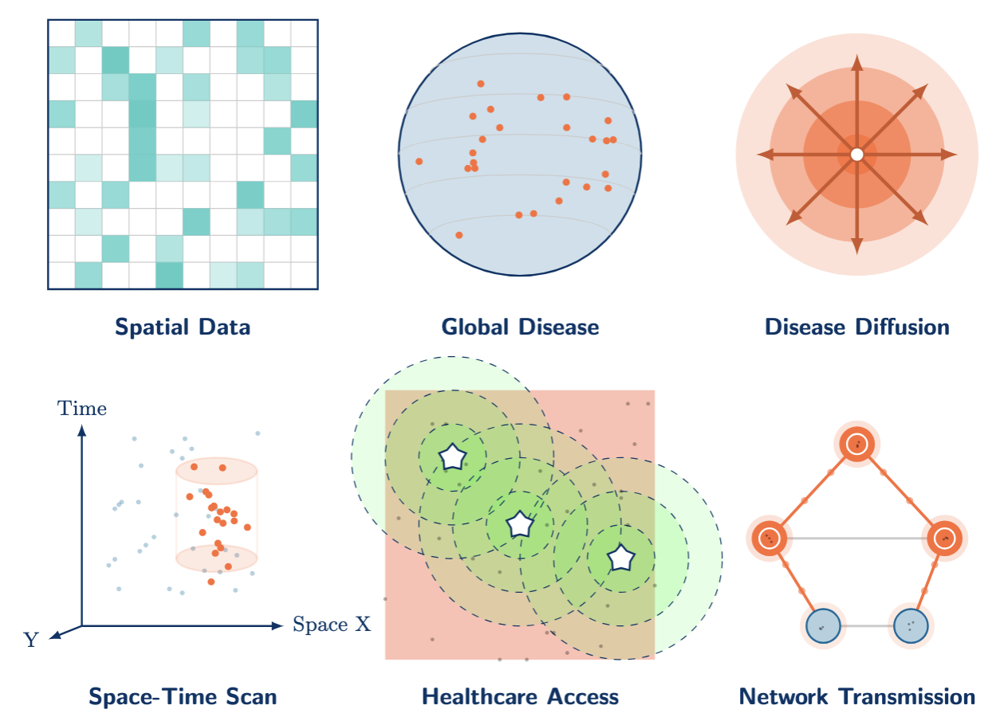

Spatial Epidemiology
Independent Study for Ph.D. students | Spring 2026 | College of Health, LEHIGH | Eric Delmelle

In Person | Online
Meeting 1 Thu Jan 22, 9:00–10:00: Orientation & Project Launch
- Class expectations, learning outcomes
- Discussion of the different concepts of spatial epidemiology
- Open discussion
Meeting 2 Thu Jan 31, 10:00–11:00: Geocoding Fundamentals
- Units of analysis, MAUP, and spatial thinking
- Geocoding accuracy: positional error and match rates
- Disclosure risk and privacy protection methods
- Aggregation, suppression, and geomasking (jittering, donut masking)
- HIPAA and ethical frameworks for spatial health data
- GITHUB Link
Meeting 3 Mon Feb 2, 6:00–7:00: More on Privacy & Resolution Impact
- Geocoding positional error: magnitude, patterns, and spatial clustering
- Impact on spatial analysis: nearest neighbors, cluster detection, and statistical power
- HIPAA privacy-utility tradeoff: 28% systematic error and geographic bias
- Power reduction when disease and geocoding failure are associated
- Research needs and policy recommendations (standardized tools, HIPAA reform, reporting standards)
- GITHUB Link
Meeting 4 Thu Feb 12, 9:00–10:00: Disease Mapping & Rate Stabilization
- From crude rates to stable estimates: dealing with small numbers
- Expected counts, Standardized Mortality/Morbidity Ratios (SMR)
- Empirical Bayes and Bayesian smoothing methods
- GITHUB link
Meeting 5 Tue Feb 17, 9:00–10:00: Autocorrelation
- Spatial autocorrelation: Global Moran’s I
- Local Indicators of Spatial Association (LISA)
- GITHUB
Meeting 6 Thu Feb 26, 9:00–10:00: Cluster Detection
- Cluster detection vs. clustering: key distinctions
- Scan statistics and spatial scanning methods
- Parameter sensitivity and cluster interpretation
- GITHUB
Meeting 7 Thu Mar 5, 9:00–10:00: Bias in Spatial and Temporal Data
- Bias and MAUP in cluster detection
- Population-at-risk considerations
- Uncertainty
- GITHUB
Meeting 8 Thu Mar 19, 9:00–10:00: Spatial Accessibility
- Accessibility concepts: catchments, impedance, and distance decay
- Two-Step Floating Catchment Area (2SFCA) methods
- Equity framing: identifying underserved populations
- GITHUB
Meeting 9 Thu Mar 26, April 2, 11:15am–12pm: Spatial Accessibility (cont’d)
- Sensitivity to methodological parameters (thresholds, decay functions)
- Modifiable catchment area problems
- GITHUB
Meeting 10, 11 Thu Apr 9, 16, 9:00–10:00: Spatial Flows & Interaction
- Origin-Destination (OD) tables and desire lines
- Scaling, filtering, and visualizing flows
- Identifying hubs and corridors
- GITHUB
Meeting 12 Mon Apr 20, 6:00–7:00: Spatial Regression
- When OLS/GLM fails: residual spatial autocorrelation
- Spatial lag vs. spatial error models
- Spatially lagged covariates
- GITHUB
Meeting 13 Thu Apr 30, 9:00–10:00: Geostatistics
- Inverse Distance Weighting (IDW) vs. kriging
- Variogram interpretation and prediction uncertainty
- Sampling design considerations
Date TBD: Final Presentations
- Deliverable: Presentations
- Deliverable: Submission-ready manuscript + target journal selection